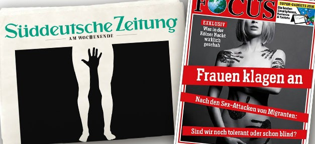

“Not our Women” after Cologne
Middle class and low-income white men are suffering from “broken hearts”, Bill Clinton told a crowd of Hillary Clinton supporters this month. They’re looking for ways to feel strong again, less power-less in the face of “great demographic change,” he continued. Increasing rates of a certain type of immigration compounded with a decline in the legitimacy of traditional masculinity, in which only dudes could consume mass-market beer (see Coors’ inclusion of women in their advertising) and be celebrated for their singular athleticism (see U.S. women’s World Cup victory), are having grave effect: The mortality rate for white men is increasing, not declining, as compared to other groups, Bill C. emphasized.
Sure, this data could be interpreted to mean that white men are in crisis. Yet it could also be interpreted as a re-distribution of territorial domains. White men, no longer allowed to consume and stock-pile exorbitantly more than their fair share, are thus bearing the brunt of what the rest of us face (to varying degrees): the strain of child-rearing and poor-paying jobs, social stigma and disrespect, and broken promises by our most trusted institutions.
Whether or not this latter interpretation is the correct one is worthy of debate; however, this is not the article with which to properly frame and carry out this debate. Rather, I would like to begin a discussion on the significance and impact for women and for immigrants of this declining white male power. Although Bill Clinton would surely prefer for me to focus on the United States, Germany will be the setting – a country witnessing the simultaneous effects of the white male crisis (from now on referred to as WMC) and the increase of immigrants from majority Muslim countries, where gendered power operates within very different historical parameters.
Germany’s position as key humanitarian actor in the refugee crisis and the role of its leader, a woman, in steering and driving EU and regional responses to the crisis, make it all the more compelling as far as WMC and demographic change are concerned. The very recent attacks on women in Cologne, in which more than 100 young women were violated physically, sexually, and personally (in any combination) by presumed immigrants and asylum applicants* provide a precise situation on which to base a discussion of WMC. The framework for this discussion begins in the fall of 2015, namely with Germany’s decision to shoulder much of the burden of the Syrian conflict.
Source: The New Yorker
As it became clear this past August that the staggering flows of those fleeing to Europe would not ebb, the European Union began to see the task of absorption and processing no longer as a matter of will but of inevitability. In confronting the situation, quotas for the distribution of asylum applicants to each of the 28 member states were passed; the numbers initially named were quickly surpassed by an increasingly grim reality; and certain states balked at EU Commission attempts to enforce said quotas. And people kept coming, washing up dead or alive.
Germany, as the largest economy and most populous country in the EU, then began to go it alone: Angela Merkel (and her coalition government) bypassed the gates of EU political convention, effectively eliminating the so-called Dublin III protocol for those migrants and recognized refugees with a Syrian passport. Instead of languishing in the overwhelmed border camps and courts of Greece, Malta, and Italy, hundreds of thousands were now free to head by train and foot and truck northward toward Germany, their nationality allowing them passage in a system otherwise characterized by strict enforcement of where-you-put-your-foot-down-first jurisdiction.
In this political moment, in this shift from common EU debate and problem-solving to geopolitical activism, Angela Merkel came to symbolize the potential for a woman’s leadership in crisis (for which the world has far too few examples, by nature of the big P [patriarchy]). For many refugees, in particular, she came to embody a sort of migration-maternalism: a woman opens her arms to millions of displaced human beings, largely Muslim; her country embraces them; and, although a tough reality of asylum proceedings** awaits, they may come and be cared for in the interim.
Then, sounding like the crescendo long-awaited by right-wing populists, the attacks on New Year’s Eve in Cologne occurred.
For those not yet familiar with the details of the Cologne attacks, here is a quick and fairly accurate summation, gleaned from multiple news sources that have worked to continually revise and update their assessments of the situation in real-time:
Late on the eve of the New Year, a band of men carried out a series of coordinated frisks, assaults, and robberies in and around Cologne’s large and iconic train station. The Associated Press reported a total of 379 criminal complaints, with 40% including allegations of sexual assault (inappropriate touching, groping, and even rape). Police reports initially described the suspected men as “refugees” before details had been confirmed, Spiegel Online reported. Victims interviewed described men of Middle Eastern and North African appearance. This information was then passed on to the press and reassembled into a series of articles and shock-mongering headlines.
The New Yorker writes that of the 32 suspects identified, 9 were Algerian, 8 were Moroccan, 5 were Iranian, 4 were Syrian, 3 were German, and 3 were Iraqi, Serb, and American, respectively. This makes for a group a bit more multicultural than the police and the press led the public to believe. The article goes on to write “we do know that 22 of the suspects are asylum applicants.” The German government has since confirmed that more than merely a few of the suspects were in the midst of asylum proceedings.
Perhaps most important to the Cologne event is not what we know about these criminals but what we know about the effects of their behavior.
It took only a few hours for a certain voice to dominate the German airwaves, calling for the protection of “our women” against the in-compatibility of largely Muslim newcomers, or a narrative of an Oriental Other assaulting Germany’s young and female. It did not help that this discussion began on the sidelines; official accounts and both public and popular media arrived painfully late.
Right from the start, Cologne police failed to promptly inform the public, in part out of fear that Germany’s growing Nativist movement would run with not yet substantiated suspicions, leading to more attacks on asylum housing and processing facilities than the increasing incidence the country had already been forced to publicly confront (and condemn). The public TV network ZDF failed to report the attacks in a timely fashion, a whole four days late to be precise. Word initially broke from unofficial sources, namely from neighborhood activists and victims who took to social media. Yet initial caution by journalistic publications soon gave way to reductionist interpretations of the night in question, most notably in illustrated form at two prominent news sources.
The newspaper giant Süddeutsche Zeitung used its front page to depict the penetration of a white woman’s pubic region by a pitch black hand. The leading weekly magazine Focus featured a naked, blonde woman smeared with hand prints in black paint.

These publications were not right-wing brochures stoking existing flames. They were Germany’s moderate dailies and weeklies, stoking the fears of a majority trying to hold it all in and, ultimately, together. In other words, fearful and fear-mongering reactions blending women’s bodies with foreign elements came from the middle of society. Not from the fringe.
41% of Germans polled do not think the media is doing enough, has been critical enough, in their reporting on and of the Cologne attacks. It is a frightening moment when citizens trust Facebook posts and tweets more than the national news providers. And when Facebook posts by everyday Germans include statements like “Where were the girls screaming ‘welcome’ this time? Those whores would certainly have loved to have their crotches or tits grabbed by countless hands”, the trouble seems deeper, stickier, knee-deep in a mess of WMC and identity in flux.
“Will they treat our women well? Will they know how to speak to and appreciate our women?” a Cologne politician asked on national German public radio in the days following the attacks. It is no slip of the tongue that a possessive article precedes “women”. Belonging to a place can quickly devolve into sentiments of ownership.
Interpreting and responding to the events of Cologne are largely white males in power, be it the incompetent police chief or the parliamentary members who have rushed to pass new asylum legislation. And so, this string of event and response begs the following question: Is the outrage directed toward Cologne’s perpetrators less about the violation of women and more about the violation of the status quo – a violation only offensive when committed by outsiders, by non-white, non-native males?
The Body-Politic
The confluence or, better yet, the conflation of female body, female person, and nation had arrived long before Cologne, before Mama Merkel. History provides countless examples of an event similar to the rhetoric now heard after Cologne, in which nationalism, xenophobia, and socioeconomic flux have coalesced around the female form, thereby rallying around all the ways we choose to represent and activate this gender. These times are also characterized by a similar strain of WMC, caused by WWI national humiliation and WWII national dismantlement, respectively.
In Nazi Germany, the female body became both a cherished garden and weapon of the state. The womb was a tool to be pointed directly at the enemy, outnumbering and eliminating their corrupt bloodlines. Women received medals of honor (Mutterehrenkreuz) for their reproductive service to the nation, and were extolled in propaganda for their virtuosity (though simultaneously sexualized in artistic depictions).
Source: USHMM
In the GDR, young women and pre-pubescent girls were taken by the state and trained to be superior athletes in dance and gymnastics. Their bodies were submitted to cruel fitness and hormonal regimes, not to mention sexual and physical abuse, for the sake of the state’s prestige. If their little bodies could be the strongest and most agile on the global stage, so would the state be seen as an emblem of strength under international socialism.
We are now at a similar juncture of the female body, the boundaries of nation and belonging, and the rise of a fear of outsiders – those beyond our high walls. The moral lines are clearer, with Germany acting as the haven-provider to a great number of human beings, and the gendered terrain more complicated, with confrontational waves of feminism and anti-feminism meeting at the issue of sexual violence.
Germany’s populist conservative party, known for its Nativist and nationalistic language, has seized the issue for the purpose of its own political ascent. This party, which calls itself “the Alternative for Germany”*** (in short form AfD), and its supporters have grabbed hold of statements by ordinary, not necessarily right-wing citizens to assert their points across the playing field of internet activism. One such comment appropriated for their messaging: “Is it for this that I donated half of the contents of my wardrobe? Is this the new Cologne? Is this the new Germany?”
Many frightened and frustrated Germans, men and women alike, now find themselves the target of further right-wing propagandizing and the machinery it seeks to build. Amidst the lack of confidence much of the country has expressed in its leader, Angela Merkel, there are increasingly fewer obstructions in this machinery’s path.
Particularly in Cologne, right-wing movements maintain a dreary precedence. Only a few years ago, a series of terrorist attacks by neo-Nazis on an immigrant district and on immigrant-owned shops in the area left much of Germany stunned. The persistent local neo-Nazi scene, combined with a strong football-hooligan landscape, has made Cologne the stage for many an uncomfortable attack on people who dare to be different.
Perhaps it is thus no surprise that the right-wing AfD is gaining momentum: For the first time ever, they’ve reached double-digits with 13%. This is no small jump in a parliamentary system, where the majority parties hold 25-30%.
The political battlefield has thus become more right-leaning in response to Cologne. Parties like AfD and the Pegida movement are the victors; the victims, i.e. women, have been shoved to the sidelines, it would seem.

Source: Handelsblatt
Many feminist activists have begun to call attention to the way in which certain men have used the Cologne attacks to, again, co-opt women’s experiences for their own ends. Not only AfD supporters have jumped at the chance to speak of “our women” in a tone that decries immigrants; ordinary citizens have found justification for their anti-immigrant feelings in the example of the assaulted woman. ‘As if these voices were not also sexist, not also part of a system in which violence against women persists?!’ these activists write. Using the hashtag #ausnahmslos, activist women seek to reclaim the discussion from groups with fingers and tongues quick to spread a message of natives-or-else. ‘Women’s safety and respect or else, more like it!’ they respond.
The old guard of women’s rights has since positioned itself in the quick-finger camp. Alice Schwarzer, one of Germany’s most iconic feminists, now in her 70s, rashly called for the mandatory re-socialization of young immigrant men in order to prevent such attacks in the future. Her vocality in the women’s rights arena has more traditionally been associated with the issue of prostitution in Germany, which is legal and thus state-regulated. But on this question of bodies, it would appear that the fear of the foreigner has somehow superseded fear of the consequences of Patriarchy… or these fears have became one and the same.
As #ausnahmslos activists emphasize, sexual violence is not an element foreign to Germany. Barriers to the inclusion of women in the workplace; in the general economy of goods, people, and services; and the social realm, such as the basketball court or nightclub, continue to persist. Stopping the discussion at “cultural assimilation” and re-education of foreigners is just another example of an ineffective approach – ineffective at addressing the systemic perceptions and symbolism that perpetuate violence against women everywhere.
Sexual violence and, in particular, violence against women in any form will not stop with the closure of borders or with the re-education of millions of Muslims. To boot, millions of Muslims already respect and honor the rights and bodies of women. And millions of Muslims are already of the understanding that they will adopt the norms of their new society as far as safety and well-being of their neighbors is concerned. For this problem of gender subjugation, disrespect, and a negative power differential (favoring the Almighty Male) will transcend and outlive migration. Because power is power anywhere. And injustice is injustice anywhere and elsewhere, as well as right here at home.
But Alice Schwarzer may still be right in her comments – right in its affect. For is it not right to be just a little scared, and to respond in kind?
No matter how much one would like to see this event as complex and thus respect its complexity, fear of the Other and an increased frustration with Germany’s role in shouldering the refugee burden is fully justified. Even for those suffering from WMC.
This fear – that newcomers will disrupt the existing social order, will displace and threaten our bodies and livelihoods – is not without logical, emotional, and even physical (that is, viscerally experienced) reason. Violence, though particularly sexual violence, is offensive in all the ways the actions of human beings toward other human beings can offend, particularly as this offense relates to the national mythology of belonging, of mother-land or father-land. The female body is a battlefield or, better, a litmus test for just how much we can welcome outsiders, and for when we will lash out at them with prods of cultural reductionism, instead. Especially when this tendency to lash out and reduce can be therapeutic.
It is a great challenge of conscience and certainly of policy to admit that fear and mistrust is valid, as concerns the more than 1 million asylum applicants who Germany will have welcomed (albeit temporarily) by spring. But only by legitimizing and honoring this fear can we begin to confront the entanglement of sexism, violence, and cultural change. Preparing society for this shift must begin with a validation and recognition that all this will be difficult and wrought with growing pains. Otherwise, fears can fester.
As can be witnessed on the other side of the Atlantic, when the fears of a large class of individuals goes unrecognized, it can lead to reactionary populism. Donald Trump’s loyal followers yearn for someone to tell them that they can, again, have durable value in the face of great rupture, and in the face of the kind of poverty and disillusionment that break the soul. Pegida and the AfD loan German men the agency they feel they lack in the face of massive cultural change and EU politics, even if this means taking the country away from all the people who are different and honor difference. Added to existing WMC, Germany could be in for the type of election that introduced certain historical cowboys and charismatic soldiers to the ranks of leadership.
But coddling and stroking the threatened will not prevent the growth of right-wing extremism in the United States or Germany, nor do these fears warrant more than brief validation. Fear may be legitimate, but it is neither productive nor is it right. For the hearts of white men may be broken. But so are the bodies of too many women. And so are the lives of too many refugees.
– By Kelly Miller
*I use the term “asylum applicants” throughout this text in reference to the different terms of status and legitimacy granted those fleeing conflict, persecution, and poverty, explained thoroughly, here, in my article on refugee status in Germany.
**Asylum applicants refer to precisely that: individuals who do not yet hold UNHCR (official) refugee status, but are seeking this status through the adjudication process of the country for which they are applying for asylum. Germany evaluates the “believability” or plausibility of each applicant’s claim to political and personal persecution endangering their life. This process once took years, has now been largely accelerated to operate a revolving door, moving those out who do not meet asylum requirements and moving those in who wish to submit an application.
The source for the social media quotes was initially this excellent article at Spiegel Online, which was verified by a bit of my own digging. Continue to follow the discussion on twitter, by searching “#ausnahmslos” or “#koeln”. The field and its actors are sure to shift further in the coming months.